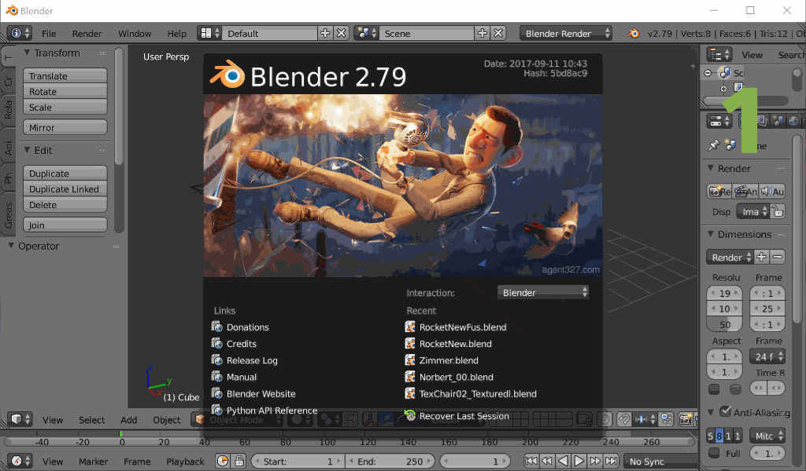

NOTE: Developing FUSEE Apps is currently only supported on Windows operating systems.
Before following the FUSEE installation instructions on this page, make sure all Necessary Tools are installed.
Installing
dotnet tool install -g Fusee.Tools.CmdLine
On HFU Pcs you in addition have to set PATH=%PATH%;%USERPROFILE%\.dotnet\tools
Uninstalling
dotnet tool uninstall -g Fusee.Tools.CmdLine
Updating
dotnet tool update -g Fusee.Tools.CmdLine
Usage
fusee and follow the help text.
Install Blender Add-on
fusee install
Enable the FUSEE Export Add-On within Blender
If a Blender installation exists at a typical installation path (e.g. "C:\Program Files\Blender Foundation...")
one of the Setup... commands in the previous step already copied the FUSEE Blender Add-on to a directory recognized
by Blender on start up. Still, the Add-on needs to be activated inside Blender:
- Open Blender
- Open the User Preferences window ("File → User Preferences" or
Ctrl+Alt+U) - Open the Add-ons Tab
- Under Supported Level activate Testing (The FUSEE Blender Add-on is still experimental).
- As a result, the Export Add-on should show up as Import-Export: .fus format. If the Add-on does not appear in the list, the Blender Add-on installation part of the setup process failed.
- Activate the Add-on by checking the check-box.
- Save User Settings and close the User Preferences window.
- Blender's File->Export menu should now contain the FUS (.fus) option capable of writing FUSEE's .fus file format for 3D Assets.
Screen Cast: Enable the FUSEE Export Add-On within Blender.
